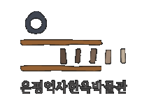

오시는길
03308 서울시 은평구 연서로50길 8(진관동)
Copyrights (C) 2021 은평구청 All right reserved.
은평역사한옥박물관
02.351.8523~4
너나들이센터
02.351.4433
삼각산금암미술관
02.351.4343
셋이서 문학관
02.355.5800
유관기관
성북선잠박물관
서울특별시 수도박물관
서울약령시 한의학박물관
허준박물관
점재정선미술관
서대문형무소역사관
서대문자연사박물관
한성백제박물관
서울역사박물관
국립고궁박물관
국립한글박물관
대한민국역사박물관
국립민속박물관
국립중앙박물관
은평구민체육센터
은평구립도서관
은평문화재단
은평구시설관리공단
EBN은평인터넷방송국
은평구보건소
은평구의회
은평구청
개인정보처리방침